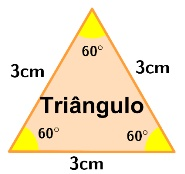

Para calcular o perímetro de um quadrado, deve-se somar os seus lados. Ambos devem possuir a mesma unidade de medida.
Como o cálculo da área é feito?
Para calcular a área de um quadrado, deve-se multiplicar o valor da base com o valor da altura. Ambos devem possuir a mesma unidade de medida.
Triângulo

Como o cálculo do perímetro é feito?
Para calcular o perímetro de um triângulo, deve-se somar os seus lados. Ambos devem possuir a mesma unidade de medida.
Como o cálculo da área é feito?
Para calcular a área de um triângulo regular, deve-se multiplicar o valor da aresta ao quadrado por raiz de 3 e o resultado dividir por 4. Ambos devem possuir a mesma unidade de medida.
Hexágono
Como o cálculo do perímetro é feito?
Para calcular o perímetro de um hexágono, deve-se somar os seus lados. Ambos devem possuir a mesma unidade de medida.
Como o cálculo da área é feito?
Para calcular a área de um hexágono, deve-se multiplicar o valor de 3 (três) vezes a aresta ao quadrado por raiz de 3 e o resultado dividir por 2. Ambos devem possuir a mesma unidade de medida.